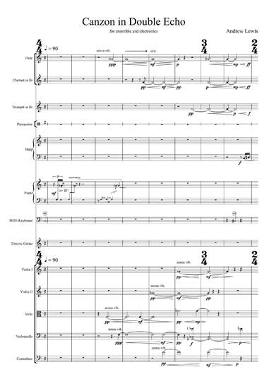

Date of composition: 1999, rev. 2004
Overall duration: c. 12 min
Format: String quartet
Premiere: 24 November, Wigmore Hall, London (UK)
Kreutzer Quartet
SPNM 60th Anniversary
Concert, curated by Sir Peter Maxwell Davies
Score: available
soon from Composers' Edition

Premiere performance of Canzon in Double
Echo with UPROAR and Michael Rafferty
Programme note: (download as PDF)
At the turn of the 17th century, composers in Venice were perfecting many years of experiments in spatial music. Their sonic laboratory was St Mark’s Basilica, and the most famous and accomplished of them was Giovanni Gabrieli. Canzon in Double Echo (a title borrowed from Gabrieli) uses electronics to pursue similar aims.
As with Gabrieli’s work, the echoes in Canzon are not mere repetitions, but transformations – we hear each musical object from different multiple vantage points in time and space. In doing so our perception of them changes, sometimes dramatically.
In many ways, this musical and sonic phenomenon echoes our human experience of time. Calling past events to mind is not simply to repeat them, but to perceive them through the powerfully transformed echoes of memory – from another place, another time.
The musical echoes in Canzon take many forms: answering or echoing phrases, sonic echoes in the imaginary space created by loudspeakers, the echoes of fragments of Gabrieli’s original, echoes of musical memories from elsewhere, echoes of echoes, double echoes…
In the final section of the piece, all the music that has gone before is echoed again, but in a changed state. It is as if the sound of praise that echoed through St Mark’s Basilica now echoes beyond its walls, down through the centuries, and then beyond even the confines of space and time, into eternity.
Canzon in Double Echo was commissioned by UPROAR and Michael Rafferty with support from the Arts Council of Wales, PRS Foundation and RVW Trust. It was first performed at Chapter Arts Centre, Cardiff, on 28 February 2020.